| 科学仏教: 菩提樹の下でブッダは何を覚ったのか？ | |
| 台場 時生 | |
| (2015) | |
本書は拙著「人類の一生」の付章として書かれたものです（※１）。本来であれば「人類の一生」の最後に付けるべきところですが、前著では科学技術を中心的なテーマとして扱っており、その最後に唐突に仏教の話を入れるのもどうかと思い、本書を分冊として独立させることにしました。
そのようなわけで装丁上本書は独立していますが、内容的には前著と続き物になっています。本書を先に手に取られた方には、少し分かりづらい部分もあるかもしれませんが、必要に応じて前著もご参照頂ければ幸いです。
さて、本書では科学と仏教を統合した「科学仏教」という新しい仏教について述べていきます。前著では「日本は無宗教の人が多いので、宗教に変わる別のものが必要だ」という文脈のもとで議論を展開し、科学を基盤とする人生観・人類観について述べました。本書ではこれとは逆に「現代に合う宗教がないなら、新たな宗教を作ってしまおう」という方向性で議論を行います。
本書で仏教を取り上げる理由は三点ほどあります。
まず一点目として、仏教は日本人にとってもっとも馴染みのある宗教だという点です。諸外国に比べると、日本には宗教を持たない人が多いのは事実です。しかし歴史を振り返るならば、日本神道と並んで仏教が長期にわたり人々に信仰されてきた、というのもまた事実です。例えば江戸時代には寺請制度が導入され一般の人々は全員、いずれかの寺院の檀家になることが義務付けられていました。また現在においても浄土宗、浄土真宗、日蓮宗など仏教の代表的な各宗派を合わせると、（厳密な数字はわかりませんが）２０００万人近い信者がいるといわれています。何をもって仏教徒と呼ぶのか、その線引きは難しいものがありますが、各種の調査からもおおむね国民の２～３割は、実際に仏教徒なのではないかとされています。
また仏教を取り上げる理由の二点目は、仏教と科学の相性の良さです。
私は仏教徒ではありませんが、１０年程前にたまたま般若心経を通して仏教を知りました。そしてその内容が、現代科学の提示する世界観と非常に似通っていることに気づき驚きました。（ちなみにこのことは多くの科学者や宗教学者が指摘しているところでもあります）
そして仏教の中でも特に、釈迦が説いた原初期の仏教（以後、本書では単に「釈迦仏教」と呼ぶことにします）は科学的な考え方に立脚し、現代でも通用する教えがたくさん含まれています。
ちなみに日本で現在信仰されている仏教の大半は大乗仏教と呼ばれるもので、釈迦の死後何百年も経ってから新たに作られたものです。そのため、釈迦仏教とは内容がかなり異なるものになっています。私たちが仏教といってまず頭に浮かぶのは、葬式や法事の際にお寺に行ってお坊さんにお経をあげてもらうことでしょう。また「他力本願」という言葉を聞いたことがあると思いますが、仏様に手をあわせたり、念仏を唱えることで死んだあと極楽浄土の世界につれていってもらう、といったようなことをイメージする人が多いと思います。
実はこれらは大乗仏教（の一部にみられる）特性であり、釈迦仏教にはこのようなしきたりはありません。釈迦仏教は完全に自力本願であり、出家信者が釈迦の教えにもとづいて修行を積むことによって、各々が覚りを目指すという形態をとっています。
ところで一見すると「どの宗派であろうと、宗教の一つである仏教と科学は水と油のような関係にある」と思われるかもしれません。しかし釈迦仏教は宗教の中では極めて特殊な部類に位置するものです。具体的にどこが特殊なのかというと、まず他の多くの宗教にあるような物語性が釈迦仏教には一切ない、という点があげられます。例えばキリスト教には聖書に描かれた神と人間に関する壮大なストーリーがあり、それに基づいて世界の成り立ちを説明します。これに対して釈迦仏教はこの種の物語を一切持たず、論理的な考察のみによってこの世界の成り立ちを説明しようと試みます。その意味では宗教というよりむしろ哲学に近いものです（実際、仏教は東洋哲学の一つに数えられます）。
「この世界はどのようにあるのか」、「人生の苦しみや悲しみを消し去るにはどうすればよいか」といった問いかけに対して、釈迦は独力で答えを探しだし、それを人々に説きました。
釈迦の教えでは、この世の中はすべて因果関係の連鎖によって作られていると説かれます。そして人間の苦しみや悲しみを取り除くには、因果の連鎖の大元にある原因を取り除く必要があるといいます。
他の多くの宗教の場合は、神に祈ることで人々の救済を求めますが、釈迦仏教ではあくまでも論理的な考察によって物事の原因を追究し、解決しようとします。
このように理を重んずるアプローチの仕方は科学の手法と共通するものです。この点において仏教と科学は親和性が高いと判断できるのです。
そして仏教を取り上げる三点目の理由として、仏教は自らの教義を更新・改良することで発展を繰り返してきた宗教だという点があげられます。
現在までの仏教の歴史を振り返ると、釈迦の入滅後幾度となく教団が分裂して新たな宗派が立ち上げられてきました。例えば釈迦の入滅から約１００年後、釈迦の教えを固持する保守派（上座部と呼ばれる）と改革を推進しようとする大衆部とに分裂します。これを機にその後も分裂は繰り返され、部派仏教と呼ばれる多数の宗派に分かれていきます。その結果、オリジナルの釈迦仏教とは様々に異なる教義が作られてきました。
さらにはその数百年後、釈迦の教えとはかなり異なる新たな教理をもつ仏教が誕生します。これが先ほど述べた大乗仏教です。大乗仏教は多仏思想（仏様が釈迦以外にもたくさんいるという考え）をもち、阿弥陀如来や大日如来といった様々な仏が登場します。また大乗仏教のもうひとつの大きな特徴は一切衆生（すべての人々）を救済することを目的としている点です。
これらによって、仏教は他の宗教と同様に物語性を持つようになり、哲学ではなく宗教としての性格がより強くなりました。その後、中国を経由して日本へと伝わった大乗仏教は法然、親鸞、空海などによって更なる発展を遂げています。
以上の出来事は単に「仏教が多様化した」と捉ええることもできますが、時代と共に新たな教理が作られてきたという点を鑑みるならば、「仏教は釈迦仏教以降、たゆまぬ改善、発展の道を歩んできた」と解釈することも可能です。
つまり仏教は「その時代その時代に合う形で」、または「素朴なものからより高度で複雑なものへ」、または「より多くの人々を救済できるように」と、実にしなやかに発展を続けてきたといえます。
しかしここのところ、仏教はその発展を停止してしまっています。直近の例でいうと、親鸞が浄土真宗を立ち上げたのは１２２４年、日蓮が日蓮宗を立ち上げたのは１２５３年です。直近といってもどちらも鎌倉時代です。それから既に８００年近くが経ち、今の私たちの生活は当時とは似ても似つかないほどに発展しました。しかしこの間、仏教の教義に対する大きな改革は行われていません。
今の時代には、今の時代に則した形に仏教を改善させていくことが大切だと私は感じています。そのため本書では、科学技術が高度に発達した時代にマッチする現代版の仏教を提案したいと考えているのです。
また本書で仏教を取りあげる理由がもう一点あります。
何かというと、仏教には誕生以来２５００年にわたり解明されていない大きな謎があるのです。実はこの謎が解明されないために、仏教そのものが未完成の状態のままになっています。
この点については本文でまた詳しく説明しますが、簡単にいうと、仏教は釈迦が２５００年前に菩提樹の下で覚りを開いたことがきっかけで始まっており、このことが仏教の教理の根幹をなしているわけですが、そのときに釈迦が何を覚ったのか、その内容がいまだに分からないのです。この状況をジグソーパズルに喩えるならば、完成間近の大きな絵のちょうど真ん中にある最後の１ピースをなくしてしまい、そのためパズルが完成できないといった状況です。
この最も重要な部分が抜け落ちた状態で、仏教は２５００年間にわたり発展し続け、世界宗教の一つにまでなりました。
そこで本書では、この釈迦の覚りの内容について新たな解釈を提示し、これによって未完だったジグソーパズルに最後のピースを当てはめ、仏教を完成させることを目標に話を進めていきたいと思います。
ではさっそく、釈迦がどのような人物だったのか、その生涯から見ていくことにしましょう。
（※１ 「人類の一生」は加筆修正の上、「人工超知能が人類を越える」として新たに出版されています）
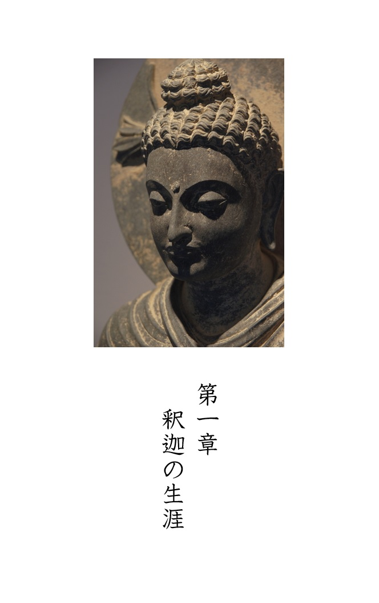
釈迦は紀元前５００年頃、現在のインドとネパールの国境付近にあった小国、釈迦族の王子として生まれました。本名は「ゴータマ・シッダールタ」といいます。本書では一般によく用いられる「釈迦」の呼び名を使うことにします。釈迦は他にも「ブッダ（仏陀）」、「釈尊」、「釈迦牟尼」など様々な呼ばれ方をします。ちなみに「仏陀」とはもともと「目覚めた人」という意味で、釈迦の固有名詞ではなく、悟りを開いた人をさす一般名称です。
釈迦の生誕については、これにまつわる有名な伝説が残っています。彼は生まれた後すぐに立ち上がって７歩き、右手で天を、左手で地を指さして「天上天下唯我独尊（この世界において私はもっとも優れたものである）」と宣言したというものです。「唯我独尊」は日常的にもよく耳にする言葉ですのでご存知の方も多いと思います。もちろん生まれたばかりの赤ん坊が歩いたりしゃべったりするはずはないので、この話は釈迦の生誕の様子を神格化したものではありますが、このような話がまことしやかに現在まで語りつがれること自体、釈迦がいかに偉大な人物であったかということを物語っています。
彼は釈迦族の王子として、何不自由なく育てられました。彼のために、夏・冬・雨季とそれぞれの季節専用の宮殿が用意され、そこで美しい女性たちに囲まれ、毎日のように宴会が催されたと伝えられています。
そのような優雅極まりない生活を送っていた釈迦ではありますが、彼は青年になるにつれ人間の老・病・死の苦しみを知るようになり、人生について強く思い悩むようになります。その様子を示す「四門出遊」という有名なエピソードがあります。四門とは城の東西南北四方にある門を指し、四門出遊とはそれぞれの門から釈迦が城外にでたときに起きた次のようなエピソードです。
まずある日、釈迦が東の門から郊外に出ると、老いて腰のまがった老人を見かけました。彼は常に宮殿内で過ごしていたため、そのような老人を見たことがありませんでした。御者に「あれは何者か」と尋ねると、御者は「老人です。人はみな長く生きるとあのようになるのです」と答えました。「私もいずれあのようになるのか」と釈迦が訊くと御者は「もちろん王子とて歳をとればあのようになられます」と答えます。これに驚いた釈迦は動揺し、外出を取りやめて城内に引き返してしまいました。
また別の日、南の門から外に出ると、今度は痩せ衰えた病人に出会いました。これまで病人も見たことがなかった釈迦は、前回と同じように御者に尋ねると、「人はみないずれ病気になり、あのような姿になります。王子とていずれはあのような姿になります。」と答えます。これを聞いた釈迦はまた城内に引き返してしまいました。
さらに西の門から城を出た日に、死んだ人が横たわっているのを目にします。初めて死人を見た釈迦は、御者から、人はみな死から逃れられないということを聞き、やはり城内に引き返しました。
最後に、北の門から出た日に、出家した修行者に出会います。今度は御者から、出家することの功徳についての説明を聞き、とても感銘を受けました。そしてその日は城へ引き返すことなく、そのまま遊園にでかけました。
以上が「四門出遊」のエピソードです。これも相当脚色が入った話ではありますが、老・病・死に憂いた釈迦はこのころから、出家して修行者になることを考え始めます。
そして２９歳のとき釈迦は妻と一人息子を残して城を出て行き、ついに修行者となります。
出家した釈迦は禅定の修行を行いました。禅定とは瞑想によって様々な精神的境地に到達すること目指すものです。彼はまずアーラーラ・カーラーマという禅定家に弟子入りしました。そこで修行をつみ、極めて短期間のうちに、師が提唱する「無所有所（むしょ・うしょ）」と呼ばれる無念無想の境地に到達できるようになりました。無の境地を得ることで師と同じレベルにまで達した釈迦ではありましたが、「このまま修行を続けてもその先に覚りの境地はない」と判断を下し、師のもとを去ってしまいます。
次に彼は、別の禅定家ウッダカ・ラーマプッタのもとを訪ねます。そこでまた修行を積み、「無所有所」よりさらに深い無の境地とされる「非想非非想処（ひそうひひそうしょ）」という境地をこれまた短期間のうちに体得してしまいます。
しかし、この境地の先にもやはり覚りはないと感じた釈迦はまた師のもとを去ります。
その後、禅定そのものに見切りをつけた釈迦は、５人の仲間とともに苦行を始めます。彼らがおこなったのは断食を主とした苦行でした。これを６年間も行い、最後には骨と皮だけになるまでやせ細りました。しかしそうまでしたにも関わらず、やはり覚りを得ることはできませんでした。
「この道もまた違う」と感じた釈迦は、６年間続けた苦行もあっさりと放棄する決断をします。
釈迦は苦行をやめて５人の仲間と別れた後、ネーランジャラー川で身を清め、アシュヴァッタ樹の下で一人瞑想に入ります。そしてこのとき、深い瞑想の末についに求め続けていた覚りを開きます。釈迦が３５歳のときでした。
ちなみに、釈迦が覚りを開いたことから、このアシュヴァッタ樹は「菩提樹（悟りの樹）」と呼ばれるようになりました。このときの菩提樹はもう残っていませんが、釈迦が覚りを開いた場所とされるブッダガヤの金剛座の横には今も菩提樹が植えられています。また覚りを開いた後も、釈迦は何日間も瞑想を続け、解脱の喜びを存分に味わったといわれています。
瞑想を終えた釈迦は、自らが覚った理法を人々に説く活動を開始します。まず初めに苦行生活をともにした５人のところに戻り説法を行いました。この初めての説法に対しては「初転法輪」という名前がつけられています。釈迦の説法を聞いた５人は彼の教えを信受し、弟子となります。こうして釈迦を師とする仏教教団ができあがり、その教えを広めるための布教活動がスタートしたのでした。
その後釈迦は入滅するまで４５年間にわたり、現在のインドとネパールにまたがる地域を旅しながら説法を行ってまわる、という生活をつづけました。その間、地位や身分によらず多くの信者を集め、仏教を一大教団にまで築き上げました。
そして８０歳のとき説法の旅の途中で体調を崩し、２本のサーラ樹（沙羅双樹）の間に北枕の方向で横たわり、息を引き取ったとされています。
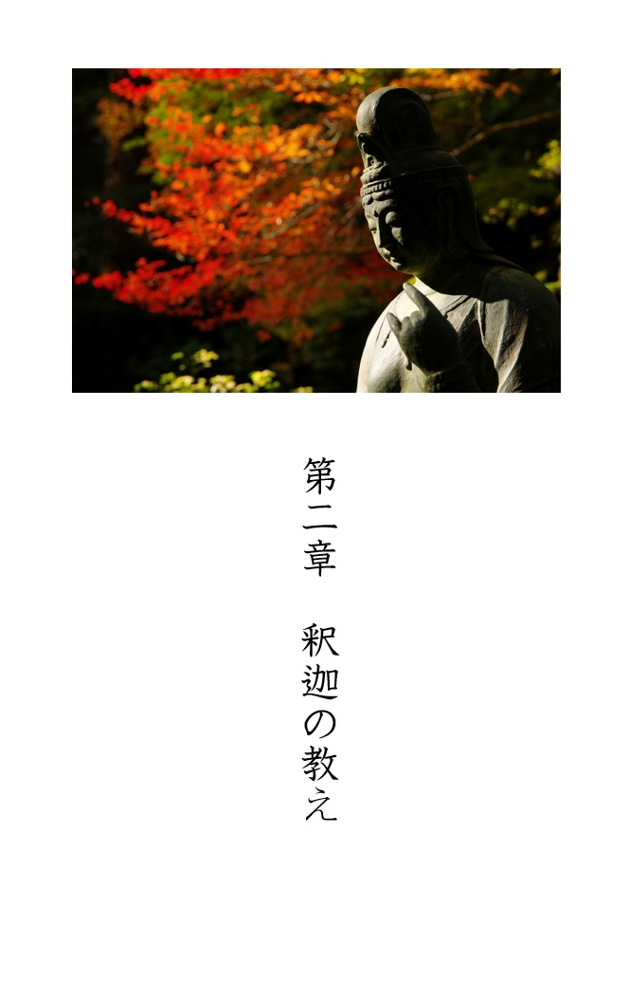
本章では、仏教の教義についてみていきたいと思います。まず始めに釈迦の教えを簡単に一言で表現するならば、次のようになります。
「煩悩を無くすことによって苦を克服し、心の安らぎを手にいれる」
これが仏教の核となる主張です。ここで煩悩とは、様々な欲望であったり、怠慢やおごりであったり、物事に対する執着といったものを指します。煩悩は細かく分類すると百八つあるとも言われています。ちなみに大晦日の夜にお寺では除夜の鐘をつきますが、鐘をつく回数が１０８回なのもこの煩悩の数に由来しているそうです。
ではこの煩悩を消し去るにはどうすればよいのでしょうか？ 釈迦が説いた「煩悩を滅し、安らぎに到達するまでの一連のプロセス」をまとめてみると、概ね次のようになります。
（１）まず初めに「生きることのすべては苦しみである」という世界観、人生観を前提とします。。
（２）そしてその苦しみがなぜ生じるかというと、私たちの心の中にある煩悩のせいだと説きます。
（３）ではなぜ煩悩が生じるかというと、この世の中の仕組みや人間のことをよく理解していないからです。
（４）具体的に何を理解していないというと、「この世は無常であり、したがって我にこだわっても仕方がない」ということを理解していません。
（５）もしこのことを深く理解するならば煩悩が消え、ひいては一切の苦を克服し安らぎが得られます。
以上が釈迦仏教の骨格をなす理論展開です。ここで釈迦仏教が大乗仏教と大きく異なる点は、苦を克服するには各自が修行に励み、右の過程を自らで体得しなければならない点です。大乗仏教のように仏様に祈れば救われるという考えは釈迦仏教にはありませんでした。
では次に、これらの（１）から（５）について詳しく見ていきたいと思います。
（１）一切皆苦
釈迦は「この世の一切は苦である」と説きました。
人は望むと望まざるとにかかわらずこの世に生を受けます。生まれてこなければ様々な悲しみや苦しみを味わうこともないのですが、生まれ出ることによって幾多の困難に立ち向かわねばならない人生がスタートします。その意味で生まれてくることや生きることはそれ自体、「苦」であると考えました。
また病気にかかることも人生の中の大きな苦しみです。現代では優れた薬や手術によって多くの病気を治すことができますが、当時は病気にかかることは、今よりもずっと大きな苦しみを伴うものだったことでしょう。また病気にかからず健康な人生を送れたとしても、いずれは「老い」や「死」といったような、人間であれば誰しも避けることができない苦しみがやってきます。
これらの生・老・病・死という４つの苦しみは人生のもっとも基本的な苦しみであると釈迦は説きました。さらに、生きていく中で日常的に体験する小さめの苦しみとしては、次の４つをあげることができます。
・愛する人と別れる苦しみ（愛別離苦）
・嫌いな人とも付き合っていかなければならない苦しみ（怨憎会苦）
・様々な欲求が満たされない苦しみ（求不得苦）
・心や体の調子が思うようにならない苦しみ（五蘊盛苦）
生・老・病・死の基本的な４つの苦しみに、これらを足したものを仏教では「四苦八苦」と呼び、今日では私たちも日常的に使う言葉となっています。
（２）煩悩
では、このような苦しみはなぜ生じてしまうのでしょうか？ 釈迦は、その原因は煩悩にあると考えました。もし満足を知らず欲望の赴くままにお金や物を追い求めれば、やがて願う通りに行かなくなり、結局満たされない苦しみを味わうことになります。また、愛する人や好きな物に終着しすぎることは、やがて訪れるであろう別れの悲しみを増大させてしまいます。また他人に対して憎しみや嫌悪といった負の感情をもつならば、そのこと自体が苦しみのもとになります。さらにその相手とずっと付き合っていかなければならないとなると更なる苦を感じるでしょう。
釈迦は「このような苦しみを無くすには、そもそもの原因である煩悩を無くすことが最善の策である」と説きました。
ただしそうは言っても「言うは易く行うは難し」というのもまた事実です。欲望や嫌悪といった気持ちは人間にとって基本的な感情なので、ただ単に「煩悩を消そう」と意気込んでみたところで、うまくいくわけではありません。
（３）無明
ではこれらの煩悩を消し去るためにはどうすればよいのでしょうか？ そのためには煩悩の根本原因である「無明」を断つことが重要だと釈迦は考えました。「無明」という言葉は少しわかりにくいかもしれませんが、簡単に言うと「物事に明るくない」、つまり「物事がよく見えていない」、「真理をわかっていない」、「無知である」といった状態を指します。具体的に何をわかっていないかというと、私たちが生きるこの世界や、人間の本質に対する正しい理解ができていないということです。
（４）諸行無常・諸法無我
では釈迦はこの世界や人間というものをどのように見ていたのでしょうか？
まずこの世の在りようについては「諸行無常である」と捉えました。つまり「万物は常に移り変わり、一時たりともとどまってくれない。したがって永遠に続く美しさや、永遠に続く幸せなどは存在しない」という無常観です。ちなみに平家物語の冒頭においても、平家の盛衰と仏教の諸行無常とを重ね、次の有名な一節が詠われています。
祇園精舎の鐘の声、諸行無常の響きあり
沙羅双樹の花の色、盛者必衰のことわりを表す
猛きものもついには滅びん、ひとえに風の前の塵に同じ
ここで祇園精舎とは、釈迦の布教生活の中でもっとも多く滞在した寺院の名前です。また祇園祭りで有名な京都の祇園も元をたどればこの「祇園精舎」から来ています。沙羅双樹については先にも出てきましたが、釈迦が入滅したときにその場に生えていた２本のサーラ樹のことです。
私たちの日常的な経験や、歴史を顧みるならば「この世は諸行無常である」ということは十分納得できるのではないでしょうか。ではなぜ無常なのかという問いに対して、釈迦はその理由を「縁起」という概念を使って説明しています。
「縁起」とは「因縁生起」を略したもので、「まず何らかの原因があり、その結果として物事が生じている」という意味です。ちなみに、以前「仏教と科学と相性がよい」と言った大きな理由はここにあります。仏教も科学も「因果関係」を基本として物事を考える点が共通しているのです。
釈迦は「この世界の出来事は全て縁起によって動いている」と説きました。つまり、ある原因によって一つ（または複数）の結果が生じますが、その結果はまた次の事象の原因となり、何かを引き起こします。このような因果の繰り返しが連鎖となって周囲に様々な影響を及ぼしながら広範囲に伝搬していきます。それはまるでビリヤードの玉が次から次へと隣りの玉を弾いていくように、「因果の波」となって世界全体へと拡散していくのです。
私たちが住むこの世界を遥か彼方から俯瞰してみるならば、何万、何億、何兆という数の因果の連鎖が網目のようにつながり、お互いに影響を与え合いながら変化し続けています。それはまるで、地球という大きなビリヤード台の上を、何兆個という縁起のボールが飛び交いながら衝突を繰り返しているような状態です。したがってこれら全てのボールを一斉に停止させない限り、全体に広がる因果の波を鎮めることはできません。
このことが「世の出来事は全て移り変わっていくものであり、一時たりとも止まってはくれない無常なものである」と説かれる所以です。
また釈迦は人間というものに関して「諸法無我」という見方を示しました。これは一言でいえば「不変的、絶対的な存在としての自我はない」というものです。仏教では、人間は五蘊と呼ばれる５つの要素からなるものと考えます。具体的には五蘊とは人間の身体と、４つの心的要素から構成されています。まずは身体を表す「色蘊」があり、精神的な感受作用、感覚を表す「受蘊」、心の中で物事、表象（イメージ）を思い浮かべる作用を表す「想蘊」、欲求などの心の動き、意志の働きを表す「行蘊」、認識や判断などの心的作用を表す「識蘊」の４つがあります。
仏教ではこれらの合計５つの要素が一箇所に一時的に寄り集まってできたのが人間だと考え、そしてその中には、自我という永遠不滅で確固とした実体は見出すことはできない、と説かれます。
（５）滅諦
この世界が諸行無常・諸法無我であるということが分かれば過度に欲望を抱くこともなくなります。そして煩悩が消え、それに伴う苦しみもなくなるでしょう。このことを仏教の教えでは「滅諦」と呼んでいます。
現存する仏教の経典の中で最も古い種類に分類され、「ブッダ自身が説いた教えに近い記述がなされている」とされる経典「ダンマパダ」に次の節があります。
「一切の形成されたものは無常である」（諸行無常）と明らかな知慧をもって観るときに、ひとは苦しみから遠ざかり離れる。これこそ人が清らかになる道である。
「一切の事物は我ならざるものである」（諸法非我）と明らかな知慧をもって観るときに、ひとは苦しみから遠ざかり離れる。これこそ人が清らかになる道である。
（「ブッダの真理のことば 感興のことば」中村元訳）
「この世のすべては変わりゆく存在で、絶対的な自分さえも存在しないのであれば、事物に執着しても仕方がない」と心の底から思うことができれば、富や快楽、自らの健康や命、さらには愛する人との幸せな日々でさえ永遠には続かない、と自覚できます。この自覚があれば何事に対しても心の平穏を保ち、嘆き悲しむことなく過ごせるだろう、と釈迦は教えているのです。
もちろんこのことを理解したからといって、すぐにすべての苦しみから解放されるわけでありません。不幸な出来事が起きれば悲しみの気持ちを抑えることができないでしょうし、またつい、一時の快楽や富を求めてしまう、という気持ちも完全に消え去ってはくれないでしょう。
なぜかというと頭では解っていても気持ち、心がついてこないからです。
釈迦が得たような覚りの境地に達するためには、これらの教えを知識として頭で理解するだけではだめです。心の底からより深く理解することが必要です。釈迦仏教の修行者はこれを実現するために、出家して修行に励みます。そして、そのような覚りに到達するために重要とされる方法が瞑想（禅定）です。瞑想によってこの世の真理を体得し、また煩悩を消し去る努力を行います。そしてこの境地を完全に習得することによって仏陀（覚りに到達した人物）となることができるのです。
ところで覚りを開いた人は、死後にどのような世界にいくのでしょうか？
仏教における死後の世界として有名なものに極楽浄土があります。この極楽をイメージする人も多いかもしれませんが、釈迦仏教には極楽浄土という概念はありません。極楽浄土は大乗仏教の一つである浄土教に出てくるもので、阿弥陀仏が住む仏国土（仏が住む世界）とされています。そしてそこは幸せに満ちた楽園のような世界です。浄土教の教えでは、阿弥陀仏の救いによって死後に極楽浄土にいくことができると説かれています。
これに対し釈迦仏教では、覚りを開いた人は死後「涅槃」に至るとされています。涅槃とはサンスクリット語で「ニルヴァーナ」といい、「吹き消す」という意味を持ちます。煩悩の火を吹き消し、安らかで寂静な境地に達するということです。
覚りを開くこと自体も涅槃と呼びますが、覚った後であっても生きている以上は様々な出来事にであうため、完全に静寂な状態というわけには行きません。そのため覚りを開いた後、死ぬまでの間を特に「紆余涅槃（うよねはん）」と呼び、逆に死んで肉体からも解放され、完全なる涅槃に至った状態のことを「無余涅槃（むよねはん）」と呼んで区別する場合もあります。
仏教では「一切皆苦」を基本思想としているため、この苦しみから解放された涅槃寂静の境地に至ることが最終的な目標とされています。
以上が釈迦仏教の概要になります。図１にそのイメージ図を示しておきます。
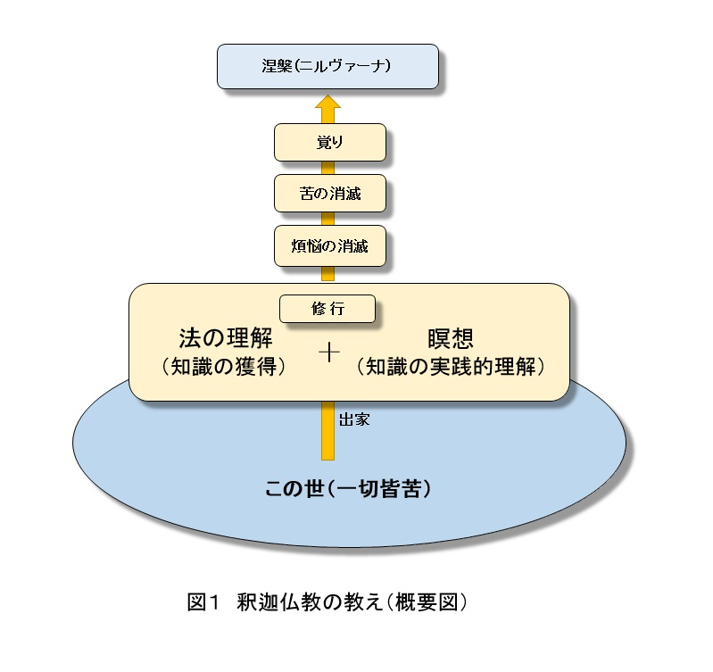
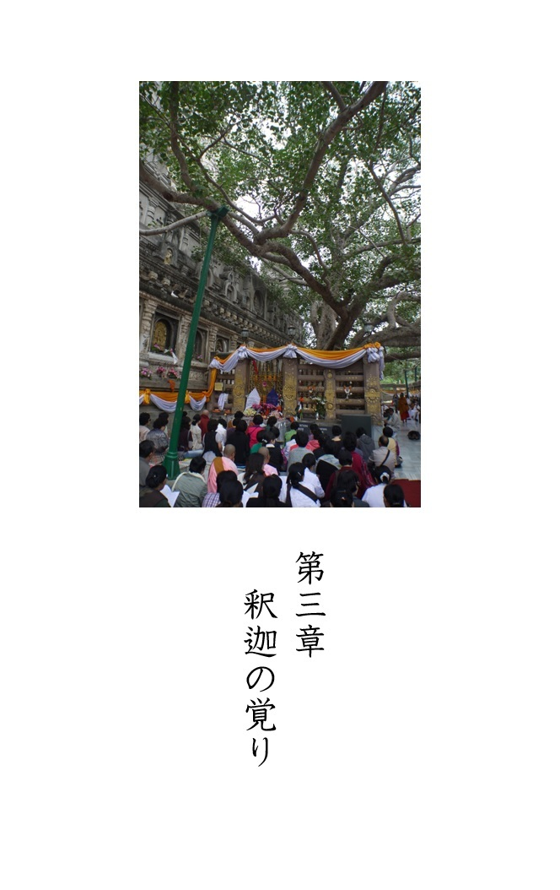
釈迦が何を覚ったか、ということについては多くの経典や仏伝に記載されています。しかしその内容は文献によってかなり異なっています。そのため、単純に「釈迦の覚りの内容はこうだ」と決めつけることはできません。
そこで本章では、釈迦の覚りの内容に関する様々な意見・見解を紹介していきたいと思います。中でも特に仏教を専門とする研究者の人達がどのように考えているのか、という点を中心にみていきます。
まず一般によくいわれている内容は「釈迦は十二縁起を覚った」というものです。十二縁起とは煩悩の根源である「無明」を始まりとして「老い」や「死」の苦しみに至るまでの過程を十二の因果関係の連鎖で説明したものです。具体的には【無明】→【行】→【識】→【名色】→【六処】→【触】→【受】→【愛】→【取】→【有】→【生】→【老死】という過程を経ます。
十二縁起に対する解釈も書物によって内容が異なりますが、ここでは、「律蔵」の記述の中から十二縁起に関する説明を紹介します。
【無明】によって生活作用【行】があり、生活作用によって識別作用【識】があり、識別作用によって名称と形態【名色】があり、名称と形態によって六つの感受機能【六処】があり、六つの感受機能によって対象との接触【触】があり、対象との接触によって感受作用【受】があり、感受作用によって妄執【愛】があり、妄執によって執着【取】があり、執着によって生存【有】があり、生存によって出生【生】があり、出生によって老いと死【老死】、憂い・悲しみ・苦しみ・愁い・悩みが生ずる。このようにしてこの苦しみのわだかまりがすべて生起する。
（「ゴータマ・ブッダ（上）」中村元）
それぞれの項目の細かな説明は省略しますが、そもそも因果関係が十二個も続くというのは、ちょっと長すぎて意味が捉え辛くなっています。そこで要点だけを抜き出し三段階の縁起に簡略化してみます。すると次のようになります。
「智慧がない（無明である）ことによって、ものごと対する欲や執着（愛・取）が生じる。そして欲や執着によって「生・老・病・死」の苦しみが生じる」
またこの流れを逆に捉えると「この世の苦しみ（生・老・病・死）を無くしたいならば、欲や執着を持たなければよい。またその欲や執着をなくすには、無明を消して智慧をつければよい」となります。これは当然ですが、前章で紹介した釈迦の教えと同じものになります。
また釈迦は覚りの際に「十二縁起」に加えて、人々の生と死やその生涯を見通すことのできる「天眼通」と呼ばれる能力や、「宿命智」と呼ばれる過去世を知る能力も得たとされています。
ただしこれらは神通力と呼ばれ、一種の超能力ともとれますので、このことを信じるか信じないかは人それぞれだと思います。
以上、一般には右のような内容が「釈迦の覚り」とされていますが、実は仏教学の研究者は「これらの説は後世の人達によって作られた話ではないか」と考えているようです。
つまり釈迦が覚った内容は十二縁起や天眼通、宿命知ではないというのです。さらにいうと「そもそも十二縁起という概念自体、釈迦本人が説いていたのではない」という見方がされています。
例えば仏教学者の中村元氏は、十二縁起の考えが体系化されたのはブッダの入滅後であって、生前のブッダがこれを覚ったとはいえないと述べています。その理由として、「ダンマパダ」と並び釈迦の時代に最も近いとされる経典「スッパニパータ」の中に、十二縁起の原型となるようなシンプルな縁起説が載っているが十二縁起自体は載っておらず、この概念が体系化されたのはもっと後の時代である、と指摘しています。
同じく仏教学者の前田專學氏は著書「ブッダ その生涯と思想」の中で、「縁起説の基礎となる考えは持っていた」はずだが、という前置きのもとで次のように述べています。
しかしここに説かれている十二支縁起説そのままがゴータマ・ブッダによって、成道のときにさとられたとすることは不可能です。
（「ブッダ その生涯と思想」前田 專學）
前田氏はその理由として、仏典に出てくる縁起説には三、五、六、九、十個といった様々なパターンがあり、その後十二縁起の形になったという点を指摘しています。
もしそうならば、本当のところ釈迦はいったい何を覚ったのかということが気になります。しかし残念ながら、これがはっきりとはわからないのです。
この点についても、いくつかの意見を紹介しておきます。前田氏はさらに次のように述べています。
どのように何をさとったのか、というもっとも重要な、もっとも知りたいと思うことに関して（経典には）さまざまに記されており、一定していませんし、また十分に明確ではありません。研究者の間でもいろいろな議論があり、未だ定説がありません。
（「ブッダ その生涯と思想」前田專學）
また、仏教と科学の関係性について独自の観点から研究を行っている仏教学者 佐々木閑氏は、次のように述べています。
一応、残された文献をよりどころにするなら、ブッダが悟ったのは、縁起の理法すなわち、我々人間は因果則に沿って存在しているという真理だったということになっている。しかし本当にそこに書かれたとおりの姿でブッダが悟りを開いたのかどうか、全く確証はない。
（「科学するブッダ 犀の角たち」佐々木 閑）
このように仏教を専門に研究している人達の見解を集めてみると、「釈迦の覚りの内容は不明である」という事が共通認識となっているようです。
では、なぜこのようなことになってしまったのでしょうか？
実は答えは簡単です。
釈迦は「自分が悟った内容はこうだ」と自ら説くことがなかったのです。これに関して中村元氏は次のように述べています。
このようにさとりの内容に関して経典自体の伝えているところが非常に相違している。いったいどれが本当なのであろうか。経典作者によって誤り伝えられるほどに、ゴータマの得たさとりは、不安定、曖昧模糊たるものであったのであろうか？ 仏教の教えは確立していなかったのであろうか。
まさにそのとおりである。釈尊のさとりの内容、仏教の出発点が種々に異なって伝えられているという点に、われわれは重大な問題と特性を見出すのである。
まず第一に仏教そのものは特定の教義というものがない。ゴータマ自身は自分のさとりの内容を定式化して説くことを欲せず、機縁に応じ、相手に応じて異なった説き方をした。だからかれのさとりの内容を推しはかる人々が、いろいろ異なって伝えるにいたったのである。
（「ゴータマ・ブッダ（上）」中村 元）
つまり、釈迦の覚りが今日はっきりしないのは、
（１）口頭によって代々引き継がれ、その後経典に記されるようになった。つまり釈迦の生前には文書にされなかった
という伝承の仕方に問題があったことに加えて、
（２）釈迦が生きていた当初から、そもそも自分が覚った内容を一切話さなかった
ということが原因です。
また中村氏の指摘にもありますが、この曖昧さのおかげで後世の人達が仏教の教義を発展させていく余地を残した、ということもできます。
以上、本章では覚りの内容について研究者の意見をみてきました。
結論としていえることは、「伝えられている釈迦の覚りの内容は、すべて周りの人が推しはかったものだ」ということです。つまり、「師の教えを総合的に判断すると、きっと菩提樹の下ではこういうことを覚ったんだと思う」というように、弟子達によって勝手に作り出された内容が、釈迦の覚りとして現在まで引き継がれています。したがっていくら探しても「これが真実だ」と太鼓判を押せるものは見つからないということになります。
あらためて考えてみるとこれは大変不思議なことです。釈迦の覚りが起点となって、仏教という世界宗教が確立したにも関わらず、その中心に位置する、肝心かなめの「覚りの内容」が何だかわからないのです。
ただ別の見方をするならば、この謎こそが仏教がもつ最大の魅力である、ともいえるでしょう。謎のヴェールに包まれた「覚り」が世界中の人々を魅了してきたのは事実であり、また現在でもサンガ（僧侶集団）を形成する出家僧達は、その「覚り」を自ら体験し解明することを目標として今日も修行を重ねているのです。
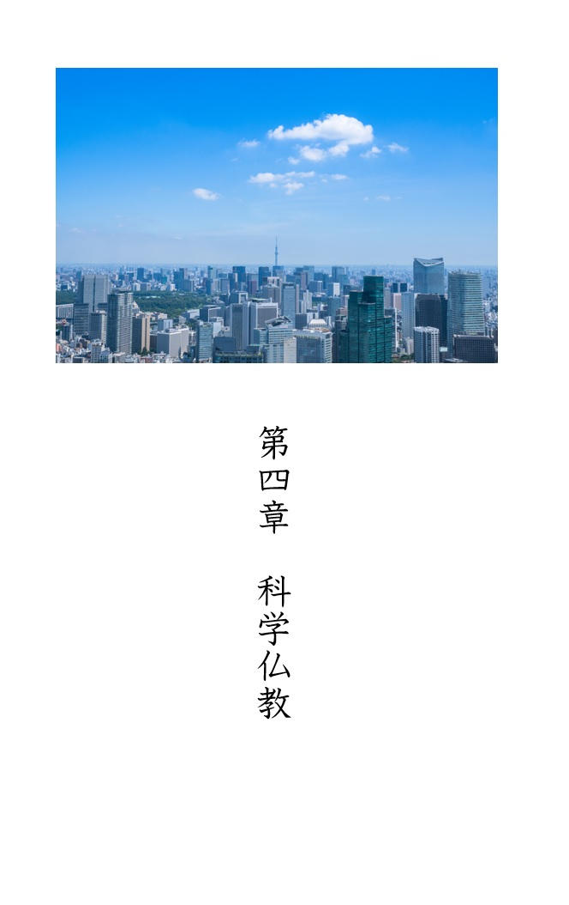
前章まで釈迦仏教について解説をしてきました。ここからは釈迦仏教とは異なる新たな仏教について述べていきます。
釈迦が生きていた紀元前５世紀と私たちが生きている現代とでは、人々の生活環境や人生観も大きく異なっています。釈迦の時代に即して説かれた教えを、今でもそのまま使っているというのでは、当然時代に合わない部分も出てきます。現代は科学技術が高度に発達した時代なので、それにマッチするように、釈迦仏教の教えも再定義・再解釈される必要があると思います。そこで本章では、現代の科学技術との融合が可能であるような新しい仏教を提案します。
大乗仏教の一つに数えられ、日本における最大規模を誇る宗派の一つに浄土真宗があります。その浄土真宗誓教寺の住職藤本晃氏の著書に「浄土真宗は仏教なのか？」という本があります。その冒頭において藤本氏は「（浄土真宗の）教義がちょっと仏教っぽくない」と述べています。祈りによって救われるという点ではキリスト教に似ているため、大乗仏教自体が「阿弥陀仏の救いで極楽浄土に行ける、という創作仏教ではないか？」といったような批判にさらされる懸念もあると指摘しているのです。そして、浄土真宗はこの問題に正面から向き合う必要があると述べています。
もちろん宗教の教義に対する批判はつきものです。どの宗教、宗派であっても同じような状況でしょう。このような批判にはふつうは取り合わずに無視することが多いのですが、藤本氏は自分たちの信仰に対する批判に真摯に向き合い、客観的な視点で、浄土真宗の教義の問題点に対する検証・考察を行っています。（なお補足しておくと、藤本氏は「浄土真宗は仏教ではない」と主張しているわけではありません。同書では、浄土真宗が釈迦の教えを受け継ぐ正当な仏教であることが示されています。）
私は釈迦仏教についても、藤本氏の指摘と同様のことがいえるのではないかと考えています。
「釈迦が覚ったというが、その内容さえはっきりしないんでしょう。そもそも釈迦の覚りなんて作り話ではないんですか？」
「釈迦は宇宙の真理を覚ったというけど、経典のどこにその真理の内容が書いてありますか？」
「釈迦は神通力を得たというけど、そんな超能力みたいなものを本気で信じているのですか？」
というように、浄土真宗の場合と同様の批判や疑問に対し、真摯に向き合い答えを出す必要があるのではないでしょうか。
なお、この疑問に正しく答えるためには、何も「経典にかかれていることは全て真実で揺るぎないものである」という前提に立つ必要はありません。特に仏教の場合はキリスト教と違って絶対的な権限をもつ、聖書のような聖典はないからです。この状況について、宗教学者の島田裕巳氏は「（仏教の）すべての経典は『偽経』である」と述べ、仏教には聖典が存在しないことを指摘しています。（※「世界の宗教がざっくりわかる」島田裕巳著）
そもそもがこのような状況ですので、経典の中に矛盾点があるならば今からでもそれを正していけばよいですし、考え方が現代にあわないというのであれば、経典の解釈や教義そのものをバージョンアップしていけばよいのです。またこのような改変が許されること自体、仏教の大きな特徴でもあります。ただし何でもかんでも都合よく変更して、「これこそ釈迦仏教の本来の姿だ」などといってしまうと根拠のない嘘になってしまいます。したがって改変した場合はその旨を明らかにし、改良版の仏教であることを銘打っておく必要があります。
以上のような考えに基づいて、本章では先ほどの疑問に正面から向き合えるような改良版の仏教を提案します。本書ではこれを「科学仏教」と呼ぶことにします。
では以後、科学仏教の考え方について述べていきたいと思います。まず釈迦仏教から科学仏教へと改訂するにあたり、その基本的な方向性は「釈迦仏教を人類全体版の仏教へと拡張する」ということです。どういうことかというと釈迦仏教とは、修行者個々人が釈迦の教えをもとに覚りの境地を目指すものでした。これに対し科学仏教では、人類全体を一人の修行者と見立て、「人類全体が悟りに向かうその道筋はどのようなものか」を説きます。
もともと前著「人類の一生」は、個々人の人生に対して用いられる「一生」という言葉を人類全体に当てはめ、「人類の一生」を考える、という趣旨で書かれたものです。この手法を本書でも引き継ぎ、仏教に対して同様の試みを行うことにします。
以下では釈迦仏教と科学仏教を対比させ、その相違点を見比べながら科学仏教の中身について述べていきます。
（１）「一切皆苦」について
釈迦は「この世の一切は苦である」と説きました。しかしこの認識は、釈迦が生きていた当時のインドにおいて一般的とされていた考え方です。したがって今の時代にはもう合わなくなってきている、と私は思います。もちろん「人生は苦しみだらけだ」と考える人もいるでしょうが、釈迦の時代に比べると明らかに物質的には豊かになっていますし、サービスなど非物質的な面においても以前より充実しています。したがって現代では「人生＝苦」と捉える人の割合は減り、逆に「人生＝楽」と思っている人の方が増えているはずです。仏教に興味をもち、仏を敬う気持ちをもつ人が減ってきているのは、この楽多き世の中へと変貌していく中で「何かに救いを求める」という必要性がなくなってきていることの表れだと思います。
そこで科学仏教の基本とする世界観は、この現在の状況をありのままに受け止め「この世は苦あれば楽あり、幸福と不幸は入り混じって存在する」という認識に立ちます。
（２）煩悩
釈迦仏教では煩悩を苦の原因とみなしました。物欲や色欲はもちろん愛さえも苦をもたらす煩悩とみなされ、覚りを開くにはそれらを克服することが必要だと説かれました。
これに対し科学仏教では「適度な欲求は善である」と考えます。もちろん、欲望や快楽を過度に追求することは、脳科学で証明されているように依存症を招き、新たな苦しみを生む原因にもなります。しかし適度の欲望や競争心などは人間にとって活力源であることは明らかです。したがって「いかなる場合でも欲望は抑えるべきだ」というような無理な考え方はしません。
また人類全体という観点から見ても、人間の欲望は科学技術や文明を推進させる原動力です。そもそも科学技術は人間の「楽をしたい」というずぼらな願いに答えるべく発展してきたという一面も持っているからです。したがって欲望は悟りにとって排除すべきものではなく、むしろ悟りを開くために必要不可欠な存在と考えます。
（３）無明と智慧
科学仏教における無明とは「個人の無知」ではなく「人類全体の無知」を指します。例えば文明が生まれる以前、何万年も前の状態を振り返るならば、その時代は明らかに人類にとって「無明の時代」と呼ぶことができます。また科学技術が発達した現在でも、私たちはこの世界の全てを知っているわけではありません。いまだに戦争が無くならないことや、自らの住む地球環境を温暖化などによって破壊していることも、これまた人類の無明の現れといえるでしょう。
また釈迦仏教でいう智慧とは、ものごとを正しく見きわめ、解釈する力のことです。これに対し、科学仏教における智慧とは「科学技術によって真理を見通す力」を指します。
また「智慧」を「智」と「慧」に分けて説明する場合もあります。「智」とは世界や人間に関する真理を理解することを指し、「慧」とは真理を実践知として体得することを指します。また別の言葉で表現するならば、理屈として頭で理解することを「智」とし、瞑想による精神的な理解を「慧」ということもできるでしょう。
科学仏教においても、このような解釈に従うならば「智とは科学であり、慧とは技術である」と説くことができます。つまり「智」は、世界を理解するための数学、物理学、化学、また人間を理解するための医学、哲学、心理学、生命科学、脳科学、遺伝学などによって得られた知識を指します。
一方で「慧」を担うテクノロジー（技術）によって科学の理論を実践、体感することができます。つまり理論としての知を、技術によって実践知へと昇華させることができるのです。例えば「電磁気学」という理論は本や講義を通して理解することができますが、それだけでは、ただ単に頭で理解した知識にとどまります。しかしテクノロジーによって無線機を作り、実際に電波を飛ばしてみれば、電磁気の存在を実感することができ、頭だけではないより深い理解が得られます。同じく、生物学や遺伝学を学べば、遺伝の仕組みやＤＮＡの役割などを頭で理解することができます。さらに、その知識を使って実際に遺伝子を操作し、生物の進化を促進するならば、それは生物に対する実践的な理解へと繋がっていくことになります。
さらに究極的には、科学技術によってこの世界を意のままに動かせるようになれば、それはまさに「この世の真理の実践的理解」であり、「智慧の完成」ということができるでしょう。
（４）滅諦
前章で述べたように釈迦仏教では苦を滅す（滅諦）ということが一つの重要な目標でした。そのために「智慧によって無明を消す」、すると「煩悩が消える」、するとさらに「苦がなくなる」という縁起に基づく理論が展開されたのでした。
科学仏教においては、いかにして苦をなくすかというと、前著で説明したストーリーがそのまま適用できます。つまり人類が生物革命や技術的特異点を越えていく過程において、科学技術が直接的に老・病・死を滅してくれます。
さらには生きていく上で不便なこと、厄介なこともすべて科学技術が解決されるので、生きる苦しみ自体も無くなくなります。結果として「生・老・病・死」の四苦、さらには「愛別離苦」などを合わせた四苦八苦のすべてはなくなります。
（５）涅槃（ニルヴァーナ）
涅槃という概念は、前著で示した人類のゴールと極めてよく符合する概念です。釈迦仏教における涅槃とは「全てを吹き消した状態」であり、そこに静寂はあるが幸せはない、という言わば「死」のような状態です。前著で示した「人類のゴール」も、全てを達成して究極的に安定した状態であり、そこに幸福はないということが示されています。
また、仏教の涅槃は「いかなる束縛（とらわれ）をも脱し、自由になること」とも説かれます。同様に人類のゴールとは「全ての制限を解除し、完全なる自由を獲得した状態」でした。
したがって科学仏教における涅槃とは「人類のゴール」と同じものと考えることができます。そして釈迦仏教と同様に、科学仏教では人類が悟りを開いたあとは涅槃に至ることになります。
ただし科学仏教では、釈迦仏教とは異なり、次のプロセスを経て涅槃に至ります。
まずは先に述べたように「この世界は苦楽が混在するもの」という認識からスタートします。その上で科学技術の智慧をもってすれば、人々の苦しみを消すことができます。次にこの世から苦しみ（不幸）が消えれば、同時にこの世から幸せも消えます（前著参照）。さらに幸せが消えれば「幸せへの欲望（煩悩）」もなくなります。そして、これらの欲望（煩悩）がなくなれば、それらに基づく行動が消えます。行動が消えれば最終的に何もない「究極の安定状態（涅槃）」が訪れることになります。
ここでのポイントは、釈迦仏教では「無明の消滅」→「煩悩の消滅」→「苦の消滅」というプロセスを経るのに対して、科学仏教では「無明の消滅」→「苦の消滅」→「煩悩の消滅」というプロセスとなり、「苦」と「煩悩」の順番が逆になっている点です。また、苦しみを滅したらそのあとには幸せだけが残りそうですが、前著で述べたように最終的には幸福もなくなってしまいます。つまり科学技術がすべての苦しみを取り除き、またすべての欲求を叶えることで、結果的に人々の心にはいかなる欲望も生じなくなり、同時に幸福という概念も消えてしまうのです。
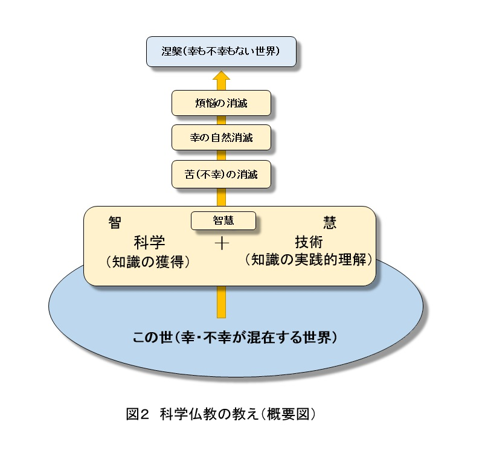
以上が科学仏教の基本的な考え方です（図２参照）。つまるところ科学仏教とは、前著で紹介した「涅槃へと向かう人類の一生」を、仏教という枠組みを使って捉え直したものです。
ここで科学仏教を、これまでの仏教の発展の歴史の中に位置づけて考えてみます。すると次のように解釈できます。
まず釈迦仏教は、修行者が各自でそれぞれに修行を積むことによって覚りを目指す宗教です。したがって覚りを得るための方法も釈迦によって明確に示されています。つまり「釈迦が説いた法を理解し、さらに瞑想によって実践的、体感的にそれを理解する。そしてこの２つが完成すれば覚りに至る」とされています。この意味では非常に具体的で現実的な路線を行く宗教と言えます。
しかしその反面、（能力のある人が）頑張って修行すれば誰でも（神でなく人間でも）覚れる、ということになります。そのため覚りを開くことがどの程度すごいことなのか、という点が今一つはっきりしません。事実、釈迦の初弟子である５人の修行者は、釈迦の説法を数日間受けただけで覚りを開きました。その後も何十人という大勢の人達が覚りを開いています。
これに対し、釈迦仏教の発展形として生まれた大乗仏教では、覚りや涅槃の定義をいわゆる神のような最高レベルにまで引き上げてしまいました。例えば「覚り＝宇宙の根本原理、究極の真理を知った状態」などとしています。したがってその境地にいる仏は、人間としての釈迦その人ではなく、例えば密教における大日如来や奈良の大仏で知られる毘盧遮那仏など架空の仏です。
しかし、ここまで覚りのレベルを引き上げてしまうと今度は現実離れしてしまい、「普通の人間が覚るのは到底不可能」ということになります。したがって覚りに至るための道を明確に示すことができなくなってしまいました。（なお大乗仏教には六波羅蜜という修行方法もありますが、ここには宇宙の真理を知り、覚りを得るための具体的な方法は示されていません。）
これらに対して科学仏教では、涅槃の定義を大乗仏教と同じく「宇宙の根本原理」や「全知全能」に非常に近いところに置きつつも、そこに至る方法を「科学技術の実践である」とし、人間が悟りに至る道を明確に示しています。
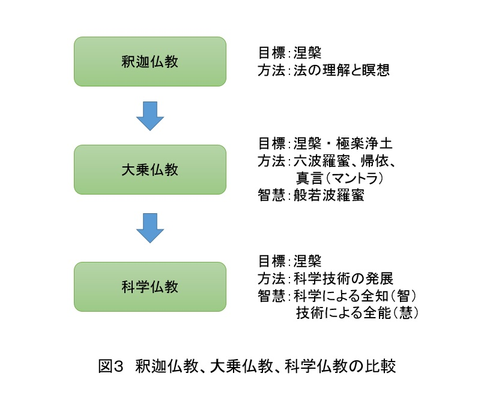
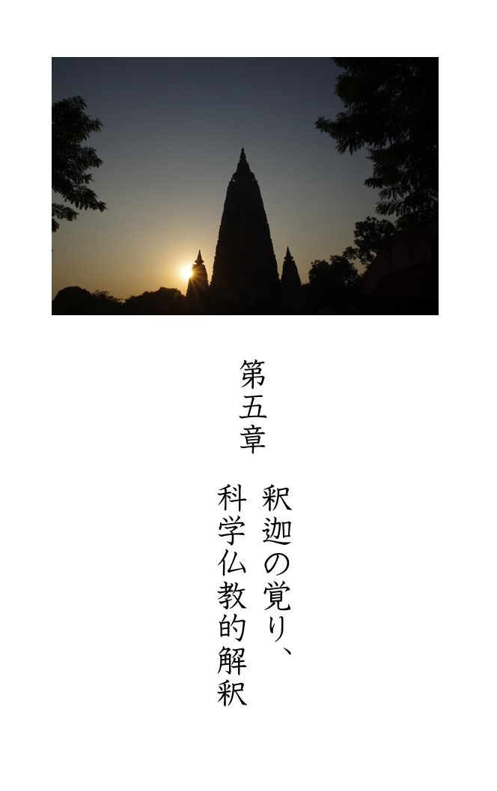
ここでは「釈迦の覚りの内容は何だったのか」という謎に対して、本書としての仮説を提案します。
もちろん先に述べたように釈迦が覚った本当の内容は、２５００年という時の中に消え去ってしまい、今となっては誰も真実を知ることはできません。したがってここで述べる主張に関しても、歴史的・文献的な根拠はありません。あくまで後世の弟子達が行ったように、「釈迦の覚ったのはこのような内容だったのではないか」という推論に基づいて仮説を述べる、というものです。（読者の皆さんにはこの点ご留意いただければと思います。）また、別の言い方をすれば、これは科学仏教という流れの中で釈迦の覚りがどのように位置づけられるかを示すことでもあり、科学仏教という立場から観た「釈迦の覚り」に対する一つの解釈ということもできます。
ではまず、基本的なところから確認していきたいと思います。釈迦は覚りを開いて全知者になったと言われますが、これはいわゆる神様のように「この世の、宇宙の全てを知っているという意味での全知者」になったわけではない、という点です。当時の釈迦が、「万有引力の法則や相対性理論の内容を、数式を使って全て正しく説明できるほどの知識を持っていた」などと考える人はいないと思います。
ちなみに他の宗教における全知全能の神の場合、「そのような人間にさえできることは、当然神にもできる」と考えられます。また仏教の中でも大乗仏教における大日如来などは宇宙の真理そのものを表すとされており、文字通りの全知とされています。
実のところ釈迦の行動や言動には、「全知」という言葉から連想される超越したイメージはなく、人間らしい面が数多く残っています。例えば釈迦は覚った後、何日も瞑想を続けながら喜びを味わったとされています。もし本当に全知になったのであれば、人間的な喜びなどなくなっていそうですが、釈迦の場合はそうではなかったようです。
また覚りを開いた後においても、説法を行うことを躊躇しています。覚者となった釈迦が「説法するかどうか決断に迷う」といった姿は、やはり神のような全知者とは異なった印象を受けます。これに関して中村元氏は「ブッダ入門」の中で「おれはさとったんだ、もう何の煩いもないというふうには、人生はそううまくいかない」と述べています。
また、弟子から死後の世界について尋ねられたとき、釈迦はそれに対して明確な回答を示しませんでした。これは十難無記（または十四難無記）と呼ばれています。「世界は時間的、空間的に有限か無限か？」、「人は死後も存在するか？」といったような、私たちの日常的な経験からは知ることができないような質問には一切答えませんでした。
釈迦がなぜ答えなかったかというと、人間の力では知りようのないこのような問題をいくら議論してみたところで、覚りを開くためには何の役にも立たないと考えたからです。このような態度を見るにおいても、釈迦はこの世の全てを知っていたわけではないということがうかがえます。
以上を見てくると、「釈迦はこの世界に関する全てを知った」わけではなく、「この世において極めて重要な、ある真実を知った」程度に考えるのが正しい解釈だと思います。
では、その「重要な真実」とはいったいどのようなものでしょうか？
前にも紹介したように、十二縁起ではないようです。中村元氏は「ブッダ入門」の中で、「十二因縁によって真理をさとったということが、よく書物に書かれていますが、よく原典を読んでみると、さとった後で、十二因縁の道理に気づいたということになっています」と述べ、原典の解釈のしかた自体が間違っていると指摘しています。
また、そもそも釈迦の覚りに対する解釈は「覚りのジレンマ」とも呼べる根本的な問題を抱えています。というのは、釈迦の覚りを単に「縁起の法である」とか「煩悩が完全に消えた状態である」などとするならば、覚りがどのようなものなのか凡人の私たちにも簡単に想像・理解できてしまいす。これでは「釈迦の覚り」に対して「到達しがたい最高の叡智である」などと思うことができません。
一方、「言葉や論理では表現できないような無分別の智慧を得た」とか「究極にして絶対的な真理を得た」などしてしまうと、それはもう言葉通り「論理が成り立たない真理」、「論理的でない真理」ということになります。つまり、それに対する論理的な検証は不可能ということになります。
このために生じる具体的な問題としては、覚りを得た人が言う「その真理」が、本当にあっているのか間違っているのか、また単に瞑想中に生じた脳の錯覚なのか、ということさえ誰にも判断できないのです。例え覚りを開いた当の本人であっても、自分の感覚だけを頼りに「説明はできないが、ありありと感じているこれこそが真理だ」とただ無根拠に、盲目的に信じる以外に方法がないのです。
このような「覚りのジレンマ」を避けつつ、うまく説明できる「釈迦の覚りの内容」はあるのでしょうか？
科学仏教が提示する解釈としては、「このとき釈迦は人類の最終的なゴール、到達点を知った」のではないかと考えます。
前著においてアフリカの部族に伝承される「宇宙の始まりの話」を紹介しました。その部族においては「宇宙は突然、無から生じた」ということが代々伝えられています。太古の昔にこのようなことを言いだした彼らの祖先は、神秘的・超自然的な幻視能力を使ってそれを知ったのかというと、必ずしもそういうわけではないと思います。ただ単に、ふとそういう形の世界の始まりを思いついたというケースも十分に考えられます。例えそれがあてずっぽうだったとしても、「何千年も後になって判明する宇宙の始まりに関する一つの科学的な仮説を言い当てた」という事実に変わりはありません。
これと同じように釈迦も菩提樹の下で瞑想をしているとき、彼の脳裏に人類の核心をつく次のようなイメージが、直観的にひらめいたのかもしれません。
「苦がなくなり、恐れもなくなり、さらには喜びも欲望さえもなくなって、完全に静寂で揺れ動かない、ある種「死」と呼んでもいいような状態、これこそが将来人類が行き着くだろう終着点だ」
この一瞬のひらめきこそが、これまで不明とされてきた「釈迦の悟り」の内容そのものだと考えます。つまり悟ったのは十二縁起ではなく、「人類の最終形が涅槃である」ということです。
インドでは当時から涅槃を最終目標とする考え方はありました。しかし釈迦は、全ての人類がいずれ涅槃に到達するだろうと気がついたのではないでしょうか。
そうだとすると、十二縁起や四諦八正道といった概念は覚ったあとに、後付けで考え出されたものと解釈したほうが自然です。例えば八正道の教えなどは、どちらかというと当たり前の道徳を言っているように感じます。釈迦の教えであるから「きっと私たちにはすぐには理解できないような深淵な意味があるのだろう」とは思いますが、八正道を実践すれば覚りが開けるというのであれば非常に多くの人が覚っていることになるでしょう。そう思うと八正道は少なくとも、覚りの核心に触れるような事柄ではないと思われます。
また想定される別のケースとしては、ひらめきによってではなく、純粋に論理的に人類の未来を予測した、ということも考えられます。
釈迦は「四門出遊」で人生に対する疑問を抱いて以降ずっと、「この世になぜ苦があるのか、それを消し去るにはどうすればよいのか」ということを考え続けてきたはずです。出家して禅定や苦行の日々を送る中で、ひとときも休まずにこのことを考えたでしょう。もしそうならば３５歳のときに菩提樹の下でようやく「これだ！」と納得できる答えに（論理的に）到達したとしても、何ら不思議なことではありません。
そうだとすると、具体的にどのような論理を使って未来を予測したのでしょうか？
一般的に言われるように「釈迦は覚りのときに縁起の理法（注：十二縁起ではない）に気づいていた」ということを認めるのであれば、縁起を使って苦を消すためのまったく別の方法についても察知していた可能性があります。
どのような方法かというと、縁起の理法によって直接的に苦を消す次のような方法です。
世の中のすべてのことが縁起に則って動いているという事実が何を意味するかというと、「因」に対してうまく働きかけを行ってやれば、未来の状態（果）を自分の望み通りに変えられる、ということを意味しています。
ただし、このことを実現するためには次の二つの要素が必要です。
（１）対象とする事象に中に、どのような因果関係が隠れているかを見抜けること
（２）その隠された原因に対して、必要な作用を与える手段を持っていること
例えば一つの例として、インフルエンザの治療法の開発について考えてみます。この治療のためにはまず、なぜインフルエンザが発症するのかその原因を発見する必要があります。つまり「インフルエンザはウイルスが原因となって発症する」という縁起をしっかりと見抜かなければなりません。
さらには、ただその原因を見抜いただけではだめで、次にウイルスという「因」に作用を与え、それを死滅させるための手段を持たねばなりません。つまり抗生物質などの薬を開発する必要があるということです。
これらの二つが揃ってはじめて、「果」であるインフルエンザという病気を克服することができます。現代の話としていうならば、（１）の因果関係を解明するのは科学の役目であり、（２）の薬の開発は技術（テクノロジー）の役目です。
ところが残念ながら釈迦の時代にはまだ、科学技術と呼べるほどのものは存在しませんでした。そのため自然界の仕組み（物理学）や私たち人間の仕組み（医学）は分からないことだらけであり、ましてやそれらを意のままに操るなど夢物語だったでしょう。
しかし釈迦の卓越した洞察力をもってすれば、縁起をもとに次のような結論に至ったかもしれません。
「万物が縁起によって動いているということを信じるならば、病にも「因」と「縁」があることになる。同様に老いや死にも、そのような結果を招いてしまう「因」と「縁」が存在するであろう。ただ今の私たちにはそれが見抜けていないだけだ。いずれ時がくればそれらを見抜けるようになるはずだ。
さらにその「因」と「縁」を操作する能力を智慧によって身につければ、人類の未来には老・病・死を含めたすべての苦しみを、直接的に消し去ることができるはずだ。」
つまり、「この世に起きる一切の出来事は自分達に理解可能な因によって生じている」と明らかな智慧をもって観るならば、右のような結論を引き出すことが可能なのです。釈迦は鋭い洞察力でそこを見抜いていたのかもしれません。
このようにして世界の仕組みを知り、それに基づいて人々の未来を予見することによって、釈迦は覚者へと変貌を遂げたのです。
ただしこの真実に気付いたとしても、それを口にするのははばかられたでしょう。釈迦が生きた当時の時代に、もし「いずれは病も老も死もなくなる」などといったら大ぼら吹きとみなされ（現代でもそうかもしれませんが）、誰も相手にしてくれなくなるであろうことは想像に難くありません。またさらには、仮にその真実を人々に説いたところで、科学技術を持たない当時の人々にとっては、何の役にも立ちません。
そのため釈迦はこの考えを胸に秘めたまま、もう一つの方法である四諦八正道の方を人々に説いたのではないかとも考えられます。
以上が科学仏教的解釈における、釈迦の覚りの内容です。結局のところ覚りに至る方法は
①瞑想中に生じた論理的根拠のないひらめき
②推察にもとづく論理的な未来予測
のどちらかということですが、実際にどちらだったのかは今となっては知るよしもありません。ただし何れであったとしても、覚りの内容自体は「(科学技術のような)智慧によって人類が涅槃に至ることに気づいた」という点に変わりはありません。
ただし、これはあくまで仮説であり、証拠と言えるような裏付けや根拠は一切ありません。しかし少なくとも「天眼通と宿命智を得た」などとするよりは「未来を予見した」とした方がよりよい仮説だと私は考えます。
このように考えれば覚りそのものがもつ魅力を色あせさせることなく、同時に「覚りの謎」を解消することができます。またこれまで理解できなかった釈迦の行動・言動に対しても、つじつまが合い納得がいくようになります。
釈迦が弟子達に語った有名な説法に「筏（いかだ）のたとえ」という話があります。これは釈迦の次の問いかけで始まります。
「修行者たちよ、
例えば旅を続けてきた男が、あるとき大きな川に出くわしたとしよう。
男は川を渡りたいと思ったが、その川は深く、流れは速かった。また渡るための船も橋もなかった。
そこで男は岸辺にある木や草で筏をつくり川を渡ることにした。
そしてその筏に乗ってなんとか渡り切ることができた。
向こう岸についた男はこう思った。
『この筏のおかげで渡りきることができた。この筏は大変役にたった。したがってこの筏を背負ってもっていくことにしよう』
さて、修行者たちよ。この男の考えは正しいだろうか」
「いいえ、正しいとは思いません」と弟子は返しました。
「では、彼はこう思った。
『この筏は大変役にたった。しかしこの筏はもう役目を終えたので、川の中か岸辺に捨て去ることにしよう』
はたしてこの男の考えは正しいだろうか」
「はい、そう思います」
「そのとおり、彼の考えは正しい。
筏は川を渡るためのものであって、決して残しておくためのものではない。
私の教えもこれと同じである。
私の教えを正しく理解したのであれば、もう用無しのものとして捨てるべきである」
この話は釈迦が自分の教えに対しても、非常に達観した考えを持っていたことを示しています。またその一方で「自分の説法は方便（覚りに導くための仮の手段）としての意味合いが強い」ということを自ら認める内容でもあります。釈迦は弟子達に説法をする際、対機説法という方法を用いました。これは相手の性格や能力、教えの理解度、またその人の置かれた状況等に応じて、説く内容や喩え話を変え、それにより説法を聞く相手の理解度を高める、というやり方です。そのため弟子達が聞いた釈迦の説法を持ち寄ると、互いに矛盾するような内容を含んでいたこともあったようです。
もしこのように釈迦が方便としての説法を行っていたのであれば、個々の説法だけでなく、もっと大きな教義の部分についても方便だった可能性もあります。
科学仏教ではこのような考えに基づき、「釈迦の教えた四諦、八正道、十二縁起（またはその原型）は、人々を覚りに導くための方便だった」と考えます。つまり科学技術を持たない当時の人々のレベルに合わせて、これらの教義を説いていたというわけです。
ちなみに大乗仏教の中観派などにおいても、「個々の説法に限らず釈迦が説いた中心的な教えまでもが方便であり、釈迦が覚った真の内容は別にあった」という立場をとっています。
また釈迦は覚りを開いたあと何日間も禅定を続けています。この点に関しては、禅定を続けながら、人々を覚りに導くための方法について理論構築を行っていたのではないかと思います。
先ほど、釈迦が覚りを得るに至った経緯として「ひらめき」と「論理的思考」の二通りのケースを紹介しました。一つ目の「ひらめき」によって覚りを得たケースにおいては、覚った内容はあくまで人類が涅槃に至るときのイメージだけであり、どうやってそこに至るのか、その方法までは覚っていません。また二つ目の論理的思考によって覚りを得たケースでは、科学技術という当時の人々にとっては魔法のようなものを使って涅槃に入るわけですから、彼らに対してこの方法を説くわけにもいきません。
しかしだからといって「苦を消すことで涅槃を得る」という最終イメージだけを人々に説いたのでは不十分です。なぜかというと「どうすればその苦しみを消し去り、涅槃に到達できるのか」という具体的方法こそ、人々が求める部分だからです。そこが無い状態で、最終イメージだけを説いても仕方がありません。
そのため覚りを開いた後、何週間も禅定をつづけながら、苦を消すための方法やその仕組みである四諦、八正道、十二縁起といったものの原型となる理論を構築したのではないでしょうか。もしそうであるならば、先ほど紹介した「さとった後で、十二因縁の道理に気づいた」という仏典の記述にも符合します。
ところで、苦しみを消すために「十二縁起」を使うのか、それとも「科学技術」を使うのか、という違いはそのまま釈迦仏教と科学仏教の違いとなります。釈迦が生きた時代は、現代と比べると人間の力では如何ともしがたいことが多かったはずです。それゆえ自分の力で外界が変えられないのであれば、内界である自分の心の持ち方を変えて全ての苦しみを解消するという十二縁起の道を説くべきです。
これに対して科学仏教の場合は科学技術の力によって全知全能を目指しています。それゆえ自身の心（内界）を変化させる必要はなく、全能性を使うことで苦しみの存在するこの世界（外界）を直接的に変えてしまう、というある意味十二縁起とは対極の道をたどり涅槃を目指します。
そういえば宇多田ヒカルさんの歌の一節に「変えられないものを受け入れる力、そして受け入れられないものを変える力をちょうだいよ」というフレーズがあります。これに喩えるなら前者が釈迦仏教のアプローチ、後者が科学仏教のアプローチということになります。
またもし本当に、釈迦が対機説法の一環として、紀元前５００年に生きた当時の人達に合わせ四諦、八正道、十二縁起を説いていたのであれば、現代を生きる私たちに対しては次のように説いたのではないでしょうか。
「今のあなたたちに『四諦、八正道、十二縁起』という筏はもう必要ありません。あなたたちは科学技術という船に乗って悟りを目指しなさい。」
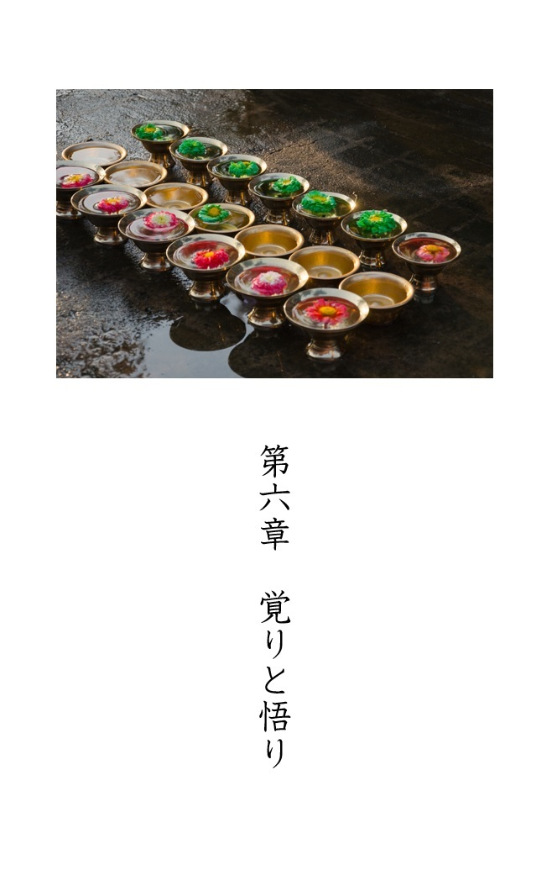
ところで、「さとり」を漢字で書く際「覚り」と「悟り」の二種類があります。これまで本書では主に「覚り」という漢字を用いてきましたが、この二つはどのように違うのでしょうか。
仏教関連の書籍を見わたしてみると「覚り」と書かれている場合と「悟り」と書かれる場合の両方があります。またさらには平仮名で「さとり」と書く場合もあります。各々の本の中では統一されていますが、どちらを使うかは本によってまちまちであり、著者の考えや慣習によって何れかが選ばれているようです。
この二つの漢字表記の意味的な違いについては、歴史的観点からの考察や、洋の東西による区別など、様々な解釈がありますが、現状では統一された見解はありません。科学仏教においては、この二つを独自に区別して扱いたいと思います。
まず「さとり」を広辞苑で引いてみると次のように説明されています。
①理解すること。知ること。また気づくこと。感づくこと。察知。
②【仏教用語】迷いが解けて、真理を会得すること。
また、「さとる」で引いてみると
①つまびらかに知る。物事の道理を明らかにする。
②推しはかって知る。察知する。
③【仏教用語】心の迷いを去って真理を体得する。煩悩を脱して涅槃を得る。
とあります。これらの意味を見渡してみると共通していえるのは、さとりを「知ること、察知すること」というように捉えていることです。この点を踏まえると「さとり」は知覚の覚でもある「覚り」の漢字を用いた方がよいと思われます。
では他方の「悟り」とはどうような意味をもつでしょうか。この言葉からは、ただ単にものごとを知る、知覚するということにとどまらず、それ以上の意味をもっている印象をうけます。具体的には、「完全に自分のものにしている」、「見切っている」、「達観している」といった印象です。
この点を考慮しつつ科学仏教的解釈に基づく「さとり」に対して、漢字を当てはめるならば次のようになります。まず２５００年前の「釈迦のさとり」は「人類の最終状態を知覚した」という意味で「覚り」と書くべきものです。
これに対し現代の私たちにとっての「さとり」は「覚り」と「悟り」の両方のケースが考えられます。まずは「覚り」の漢字をあてる場合、その定義は、
「科学技術によって人類が向かう最終的な到達点は、幸も不幸もない涅槃の状態であると気づき、理解すること」
となります。この科学仏教における覚りは、釈迦仏教における覚り（これまでの仏教における覚り）に比べると非常に簡単で浅い内容です。つまり修行も瞑想も必要としません。ただ気づき、納得するだけです。しかし辞書にもあるように「覚り」のもともとの意味は「気づき」や「知ること」です。この点を考慮し、科学仏教における「覚り」に関しては、神秘性を持ち込まない範囲にとどめておきます。
続いて科学仏教の「悟り」についてですが、この定義は、
「科学技術によって人類が全知全能に近い状態になり、幸も不幸もない状態（涅槃）に到達すること」
です。つまり未来において人類が実際に涅槃に入った状態を指します。これは単に「何かを知っている」というだけでなく、到達し達観した状況にあるといえるので、漢字としては「悟り」をあてるのが適当でしょう。これらの「覚り」と「悟り」を、前著の「人類の一生図」に書き加えたものを図４に示しておきます。
もちろん人類が実際に涅槃に到達するというのは簡単なことではないでしょう。その日が来るのは百年後なのか、千年後なのか、はたまた２０４５年の特異点突入の直後なのか、については想像もつきません。しかし前著で紹介したように人類がもし不老不死になれるとしたら、私も一度は涅槃の世界を見とどけてみたい気がします。
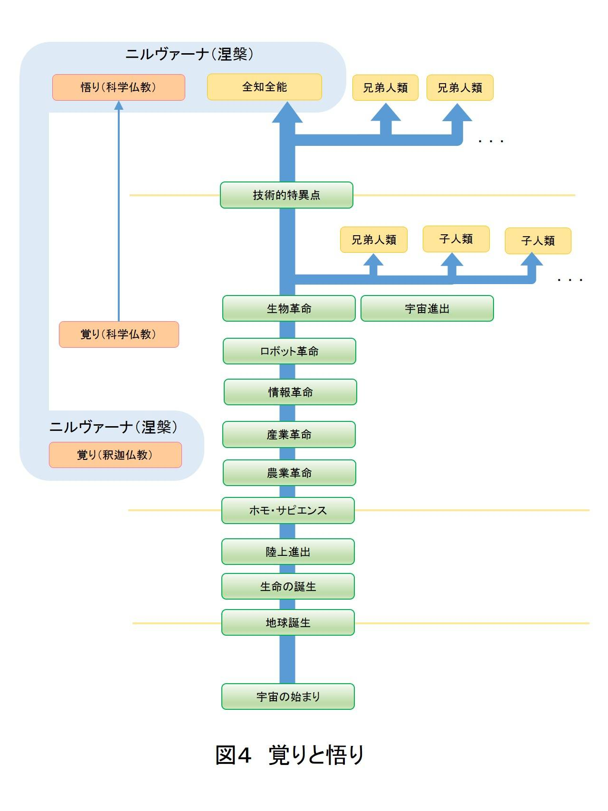
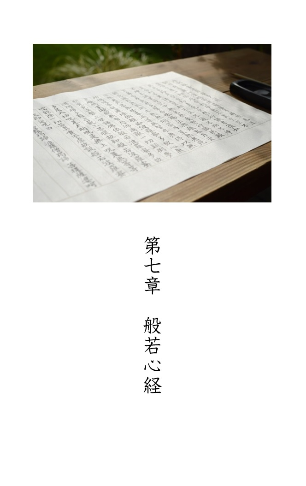
本書の最後に、日本でもっともよく知られているお経の一つである般若心経について述べておきます。お経に全く興味がない人であっても、この中にでてくる「色即是空、空即是色」という一節はご存知の方が多いと思います。お経というと葬式や法事の際に聞くことが多く、どこか暗いイメージを伴います。実は私も、般若心経の内容を知るまではそのような暗いイメージしかありませんでした。
しかしその訳をみればわかりますが、般若心経は非常に哲学的な内容を含んでいて、日本人がもつ無常観とも響き合うものがあります。ですので仏教に興味がない人であっても、単に現代詩と思って読めば十分に味わい深く、楽しめるものだと思います。
この般若心経は大乗仏教において作られたもので、「空、般若（智慧）」といった大乗仏教の中心的な思想を説いたものです。お経の中では、観自在菩薩（いわゆる観音様）が釈迦の弟子である舎利子（シャーリプトラ）に対し、涅槃の境地へ至る道を説くという設定で始まります。
では、お経の全文とその意味を次に示します。
観自在菩薩が究極の智慧を完成させたとき（観自在菩薩行深般若波羅蜜多時）
五蘊はすべて空だということを見抜き、（照見五蘊皆空）
一切の苦厄を消し去った（度一切苦厄）
舎利子よ。（舎利子）
私たちの身体（色）は空に他ならず、また空は色に他ならない（色不異空 空不異色）
色とはすなわち空のことであり、空とは色のことである（色即是空 空即是色）
私たちの感覚や意識もこれと同じく空である（受想行識亦復如是）
（つまるところ、私たちを構成する身体と意識、その全ては空といえる。）
舎利子よ（舎利子）
また全ての理法は空としての性質を持っている（是諸法空相）
したがって生まれたり消えたりといった現象はなく（不生不滅）
汚れたり、浄化したりといった現象もない（不垢不浄）
また増えたり減ったりもしない（不増不減）
したがってそのような空性の中に、私たちの身体など存在しえない（是故空中無色）
同じように感覚や精神活動もまた、存在しない（無受想行識）
つまり眼、耳、鼻、舌、身体、脳といったような
感覚器官、思考器官などなく（無眼耳鼻舌身意）
またそれらが感知する形や色、音、香り、味、表象といった
知覚や思考の対象もない（無色声香味触法）
したがって五感や脳による認識・判断作用を含め、
全てのものは存在しない（無眼界乃至無意識界）
さらにいうならば、もともと人間の無明などというものはなく、（無無明）
したがって「無明の消滅」などといったこともない（亦無無明尽）
また人間の老いや死はなく、（乃至無老死）
したがって「老いや死がなくなる」ということもない（亦無老死尽）
人の苦しみを消しさるための道もなく、何かを知ることもない。
また何かを得るということもない（苦集滅道 無智亦無得）
それゆえに菩薩は究極の智慧だけを拠り所とし、（以無所得故 菩提薩埵 依般若波羅蜜多故）
心の妨げを消し去った （心無罣礙）
心に妨げがないゆえ、恐れの感情もない（無罣礙故 無有恐怖）
そうして今や一切の誤った考えから遠く離れ、（遠離一切顛倒夢想）
涅槃の境地へと達している（究竟涅槃）
過去、現在、未来において仏となった者はみな、（三世諸仏）
このように究極の智慧を実践することによって（依般若波羅蜜多故）
完全なる悟りを手にしたのである。（得阿耨多羅三藐三菩提）
したがって次のことを知るべきである。（故知般若波羅蜜多）
究極の智慧は大いなる真言であり、大いなる明智の真言である。（是大神呪 是大明呪）
また無上にして比類なる真言である。（是無上呪 是無等等呪）
この真言は一切の苦を除くものであり、（能除一切苦）
真実であり、偽りなきものである。（真実不虚）
よって次のように究極の智慧の真言を説こう（故説般若波羅蜜多呪 即説呪曰）
「ガテー、ガテー、パラガテー、（羯諦羯諦 波羅羯諦）
パーラサンガテー、ボーディ、スヴァーハー」（波羅僧羯諦 菩提薩婆訶）
以上、般若心経を終わる。（般若心経）
このお経を解釈するとき一番困ることは、文中多くの箇所で釈迦の教えを否定している点です。これに関しては、「大乗仏教の立場から部派仏教の考え方を批判している」、または「釈迦の覚りより一段上の高みにある大乗仏教の悟りを説いている」といった様々な解釈がなされます。確かにそのようにも解釈できますが、「釈迦仏教を否定している」と思いながら読んでも気持ちのいいものではありませんので、ここでは「涅槃に入ると無明や老死や苦しみ、またそれらを消す方法といった一切のものは必要なくなる」という意味にとることにします。いわゆる「筏（いかだ）の喩え」的な解釈の仕方です。
では最後に、科学仏教の考えに基づく般若心経の意訳（自由訳）を述べて本書を終えたいと思います。
【般若心経科学仏教訳】
この世のすべてを自在に観ることができる観音菩薩は、究極の智慧を完成されたとき、この世のすべては空であることを知りました。そしてそのことによって一切の苦しみや災いから解放されたのです。
私たちの住むこの宇宙は１３８億年前に何もないところから始まりました。したがって今私たちの周りにある全ての物は無から生まれたものです。その意味では物質的な存在、物質的現象はすべて「空」といえ、また「空」から物質や物質的現象が生まれたといえます。
物質的現象が空だというならば、もう一つの現象である心的現象の方はどうでしょうか？ 私たちの感覚、想い、意思、判断といったものは確かな存在なのでしょうか？
これについては現代の脳神経科学が教えるように、私たちの思いや考えは脳のニューロンの物理的な動作によって決定されており、「意識」はそれによって生じる副産物、つまり幻かもしれない、ということが分かっています。したがってこれらの心的現象もまた「空」だといえるでしょう。
この宇宙は無の世界から、法則のみに従って生まれてきたことを人類の科学は解明しました。そしてこれこそが「空」の神髄なのです。
「量子力学が解き明かす物理法則」や「脳科学や哲学が提示する意識・クオリアに関する法則」など、近年の科学が解明する諸法則の多くは「この世界は空である」ことを物語っています。これらの法則が示す空性は、悟りの世界である涅槃の性質が、現世にまで現れてきたものです。
そしてあなたも完全なる悟りに到達すれば次のことがわかるでしょう。
そもそも涅槃の世界では「生じる」とか「消滅する」といったことはありません。「汚れる」とか「浄化する」といったことも、「増える」、「減る」といったこともないのです。したがってそのような世界の中では物質も精神も確固たる存在ではないということです。
したがって人間のことをいうならば、まず第一に目、耳、鼻、舌、体、脳といった感覚器官や思考器官の存在も確固たるものとはいえません。また、色、音、匂い、味、手触り、（脳に浮かぶ）イメージといったものは、感覚神経や脳のニューラルネット内を駆け巡るただの電気信号であり、そこに色や音としての実態はありません。したがって脳内で発生するクオリアも幻といえます。
完全なる悟りの世界においては、「無明や無明がなくなるということ」、「老いや死、またはそれらが無くなるといったこと」とは無縁です。
また苦を消すための様々な道程もありません。釈迦が説いたように、悟りの川を渡り切った後の世界にはこのような筏はもう必要ないのです。
このように悟りを目指す者は、科学技術を拠り所とし、心の妨げや恐れを取り除き、究極の安定状態である涅槃に到達します。
この宇宙が始まって以降、既に私たちより先にゴールに到達した生物がいるかもしれません。また未来には、私たちの後から続く猿や犬、鳥、さらには虫までもが叡智を極めゴールに到達するかもしれません。
ただ、いかなる生物であろうと悟りに至る道は一つです。
「科学技術によってすべての制約を解除し、完全なる自由を獲得する」
という同じ道をたどるのです。
したがって次のことを知るべきです。
科学技術は大いなる進化の道であり、偉大なる智慧の実践です。そしてそれは人類にとって無上無比の修行の道なのです。科学技術は幸も不幸も一切ない涅槃の境地へといざなうのです。
では（本書の）最後に、私たち人類が涅槃に到達する姿をイメージしながら、次の真言（真実の言葉）を説きましょう。
「往ける者よ。往ける者よ。彼岸に往ける者よ。完全に彼岸に往ける者よ。よくぞ悟りに到達された。」
以上、科学仏教訳による般若心経を紹介しました。
本書では、科学技術と仏教を融合する形で釈迦仏教に対するあらたな解釈を提示し、さらに菩提樹の下で開いたとされる「釈迦の覚り」についても新たな説を示しました。
もちろん本文中でも述べたように、このような覚りの内容が歴史的事実だ、などと主張する趣旨はありません。あくまでこれは科学仏教という立場から見た釈迦の覚りに対する解釈です。
しかし、一方で私たちは、「釈迦は何を覚ったか？」という何処を探しても答えの見つからない問いに対し、「謎」という言葉で美化しながら２５００年にわたり幻を追い求めてきました。今後もこのような状態を続け、仏教を未完成のままに放置するよりも、一度明確なピリオドを打った方がよいと考え、本書を執筆しました。
このように仏教を一度完成させることが、これからの仏教、特に技術的特異点を迎えつつある現代の仏教にとってはとても重要なことだと、私は考えています。なぜかというと、前著「人類の一生」で述べたように特異点を超えると科学技術によって人の欲望はほぼ全てがかなえられ、病気や老い、さらには死までもが克服できるようになると予想されています。ということはつまり、釈迦が説いた生、老、病、死の苦しみを取り除くための十二縁起、四諦、八正道に頼る必要はなくなり、ひいては仏教そのものが不必要になるかもしれないということです。
「仏教というのは病める人や迷える人にとって心の救いとなるのが目的だから、そのような人がいなくなれば仏教はその役割を終えてもかまわない」という見方もあるでしょう。しかし私は、仏教は単にそれだけの存在では終わらないと思っています。
なぜなら仏教は人々の救済という目的以外に「世界と人間の真理を探究する」という哲学的、科学的な側面を多分に持ち合わせているからです。また釈迦仏教、大乗仏教ともに言えることですが、それらの真理を探究する過程において生み出された様々な思想、人生観、世界観というものは今後を生きる私たちにとって有用なものになってくると思います。
そもそも釈迦は２９歳のときに、なぜ家族を捨ててまで出家したのでしょうか？ 日々の生活の苦しさから逃れたかったわけではありません。釈迦は一国の王子として何不自由ない裕福な環境で生まれ育っており、一般にいうところの生きる苦しみとは縁遠い存在です。
では別の理由として、例えばマザーテレサのように貧困にあえぐ人達を直接的に助けたかったでしょうか？ いえ、それもまた違うでしょう。
釈迦は「この世界の真理とは何か？ 人間とは何か？」また「この世に苦しみがあるのはなぜか？ それを消し去る方法はあるのか？」といった根本的な問いに対する答えを求めて修行の道へと踏み出したのです。
その意味ではむしろ「救済」よりも、哲学的側面の方が釈迦仏教の重要なテーマと言えるでしょう。
科学技術が進み様々な制約が解除されると、何の苦労もなく生きていける時代がやってきます。そうなると「どうすべきか」よりも「どうしたいのか」が問われるようになります。前著でも述べましたが、これは各々の価値観、世界観、人生観に基づいて各人の進む方向、および人類全体の進む方向を決めていかなければならないということです。残念ながら科学技術はこの問題に答えてはくれないのです。そのときに仏教を初めとする宗教や哲学の役割があらためて見直されることになるでしょう。そのときに備えて仏教は今、生まれ変わる必要がある、と私は思うのです。
先ほど「科学仏教によって仏教にとりあえずのピリオドを打つ」といいましたが、ここで終わりというわけではありません。これは「救済を主目的とする仏教」から、「人類の生き方を探究するための仏教」へと、さらなる進化を遂げるためのスタート地点ともいえます。
アントニ・ガウディが設計し、没後９０年経った現在も建築が進められている寺院サグラダ・ファミリアのように、釈迦は自分の一生では描ききれないほど壮大な絵を、私たちに描いて見せたのかもしれません。私たちは仏教のさらなる完成に向けて今後もバトンを引き継ぎ、次の世代に渡していくことが必要ではないでしょうか。
釈迦は入滅の直前、弟子達に次のような言葉を残しました。
「すべてのものは無常である。怠ることなく修行に励み、それを完成させなさい」
もし釈迦が本当に人類の未来を覚っていたならば、この言葉は釈迦の弟子達だけに向けた言葉ではなく、私たちを含む後世の人類すべてに向けたメッセージのように感じます。
２０１５年７月 台場 時生
科学仏教
著者 台場 時生
ロボット工学研究者。専門はヒューマノイド関連技術。研究を通してロボットや人工知能と人間の共存の在り方、さらに人類そのものの未来に関心を持つ。
写真：PIXTA
２０１５年７月１５日 第一版発行
２０１５年９月３０日 第二版発行
２０１６年７月３１日 第三版発行
Copyright© Tokio Daiba 2015
（本書の一部あるいは全部を無断で複写複製することは、
法律で認められた場合を除き、著作権侵害となります。）